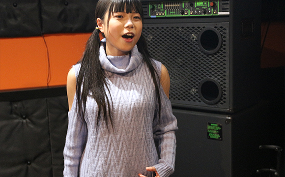
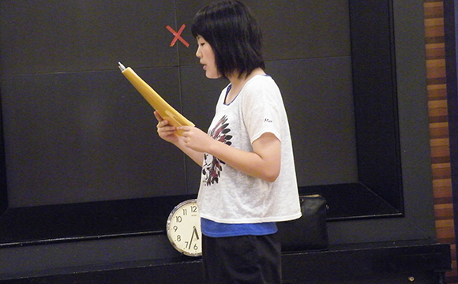
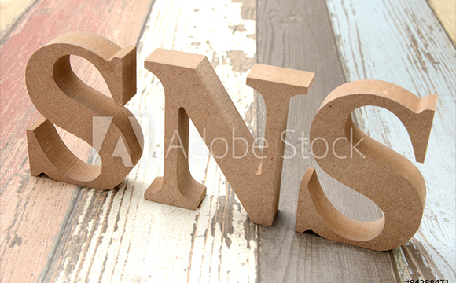

- TOP
- レコーディング
レコーディングで着実で飛躍的な成長を
福岡のボーカルスクール「Pure breed（ピュア ブリード）」では、プロ養成コースや趣味でボイトレコースを受講する生徒さんたちに、レコーディングで自分の歌を客観的に聞いてみることをおすすめしています。また、当スクールのスタジオでは、プロ仕様材も導入しており、プロのレコーディングとも遜色ない録音環境を整えています。ご自分の歌をレコーディングしてみたいという方は、どうぞお気軽にご相談ください。なお、レコーディングについては MV制作同様に、当スクールの生徒さん以外の、一般の方からのご相談も承りますので、遠慮なくご相談ください。
レコーディングの大切さ
録音した自分の声を聞いて「え、これが私の声？」と感じた経験はありませんか？
「Pure breed（ピュア ブリード）」では、ボイストレーニングを続けて、自分の声に自信が持てるようになってきたら、レコーディングで客観的に聞く機会を作るようにしています。歌っている最中は、自分の声は喉からの響きとして身体で感じます。もちろん、周囲に反響した自分の声も聞いているのですが、他の人の耳に届いている声（音）とは大きく異なります。
また、歌うことに集中している間は、歌い方・声の出し方の方向性が間違っていないかを確認することは非常に難しいものです。録音した音は、厳密にいうと生の音とは異なりますが、それでも自分の歌を見つめ直す（聴き直す）のには欠かせないツールだといえます。

レコーディングしないと欠点に気づけない

実は客観的に聴くといっても、「聴く耳」つまり正しいものを聞き分ける力がなくてはあまり意味がありません。当スクールでは、主観や感覚だけに頼った聴き方ではなく、理論に基づいた音・声・音楽の聴き方についてもレクチャーしながら、トレーニングを進めていきます。レコーディングはその「聴く耳」を養うためにも大変有効な方法です。
また、週に1回もしくは数回のレッスン以外は、自分ひとりで練習に取り組むことになります。その際に、自己流の間違った声の出し方でトレーニングを進めていくと、軌道修正がなかなか難しくなります。さらに、そのまま自主練習に取り組み続けることは、喉を痛めてしまう原因にもなりかねません。きちんとした機材を使ってスタジオで録音すること以外にも、スマートフォンやボイスレコーダー等で簡単な録音はできますので、節目々々で振り返りの意味も込めて、録音した自分の歌を聴き返してみるといいでしょう。
スタジオでレコーディングするメリット
録音のメリットはたくさんあります。レコーディング時の緊張感は、いつもの自主練習やレッスンでは得られないものです。緊張する場面でも自分をコントロールしてリラックスし、普段もしくは普段以上のパフォーマンスが出せることは、プロに求められる基本的な能力です。また、録音を聴き返すことで、声の出し方や声量、音程ハズレ、などに気づくことは大きなメリット。繰り返し聴くことで、あいまいに終わらせることなく自覚的に、確実に修正することができます。
そして、録音した歌はSNSなどを通じて、広く配信することができます。音楽専門のSNSはもちろん、InstagramやYouTube、TwitterやFacebookなどでも発信は可能です。アーティスト活動をするときに、アピールする材料の一つになり、自分の可能性を広げる一助となるでしょう。
Vocal school Pure breed（ピュア ブリード）では、プロも使う、高性能な機材を使用したレコーディングを行っています。ただ高価な機材を使えばいいというものではなく、適切な環境で適切な使い方をしなくては、その性能を最大限活かすことはできません。当スクールでは、歌い手の声の魅力を引き出せるよう、ベストな録音環境でレコーディングを進めますのでご安心ください。
